75 equations — 75 machine-verified, 0 flagged. Green = verified, amber = flagged (still shows best LaTeX + source crop).
| # | ID | Status | Rendered (KaTeX) | Source crop (PDF) |
|---|---|---|---|---|
| 1 | II-6-1 | agreed | $$T >> \frac{L_b}{\sqrt{gd_b}}$$ | 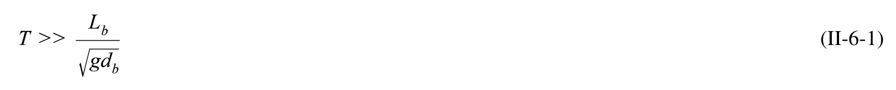 |
| 2 | II-6-2 | agreed | $$\frac { \partial V } { \partial t } \: + \: V \frac { \partial V } { \partial x } = - g \frac { \partial h } { \partial x } - \: \frac { f } { 8 R } V \lvert V \lvert$$ | 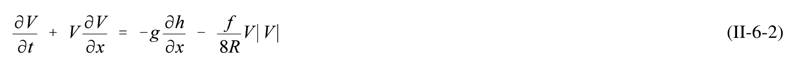 |
| 3 | II-6-3 | agreed | $$VA_{avg} = A_b \frac{dh_b}{dt}$$ | 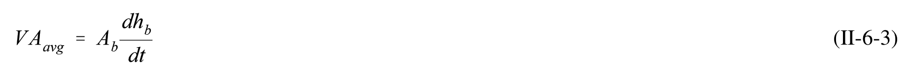 |
| 4 | II-6-4 | agreed | $$K = \frac{TA_{avg}}{2\pi A_b} \sqrt{\frac{2g}{a_o \left[k_{en} + k_{ex} + \frac{fL}{4R}\right]}}$$ | 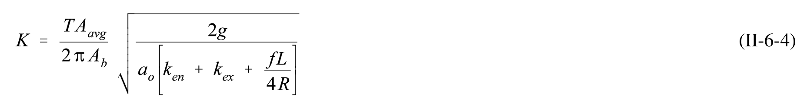 |
| 5 | II-6-5 | single_verified | $$V _ { \ m } ^ { \prime } \ = \ { \frac { A _ { \omega v g } T V _ { m } } { 2 \pi a _ { o } A _ { b } } }$$ | 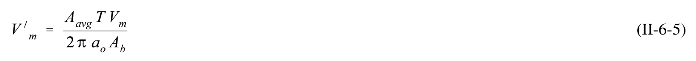 |
| 6 | II-6-6 | agreed | $$K_1 = \frac{a_o A_b F}{2L A_{avg}}$$ | 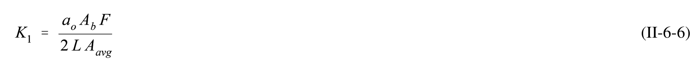 |
| 7 | II-6-7 | agreed | $$K_2 = \frac{2\pi}{T} \sqrt{\frac{LA_b}{gA_{avg}}}$$ | 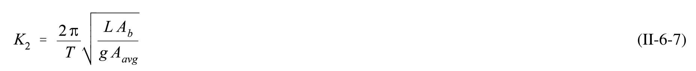 |
| 8 | II-6-8 | agreed | $$F = k_{en} + k_{ex} + \frac{fL}{4R}$$ | 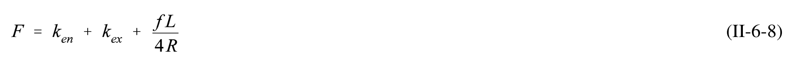 |
| 9 | II-6-9 | single_verified | $$V \approx \ V _ { _ { m } } \ { \mathrm { s i n } } \ { \frac { 2 \pi t } { T } }$$ | 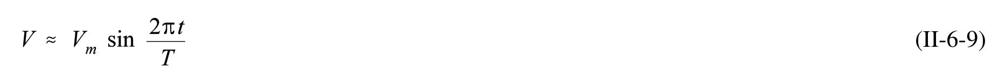 |
| 10 | II-6-10 | agreed | $$h _ { b } \approx a _ { b } \cos \left( \frac { 2 \pi t } { T } \mathrm { \, - \, } \epsilon \right)$$ | 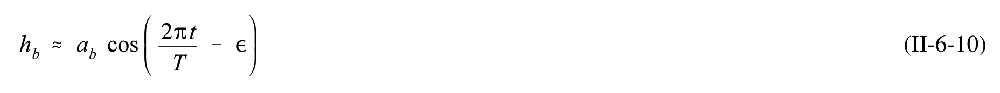 |
| 11 | II-6-11 | agreed | $$K = \frac { 1 } { K _ { 2 } } \sqrt { \frac { 1 } { K _ { 1 } } }$$ | 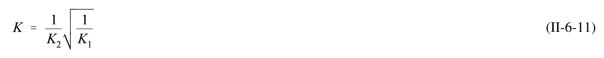 |
| 12 | II-6-12 | agreed | $$P = 2 \ a _ { b } \ A _ { b }$$ | 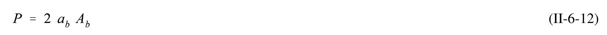 |
| 13 | II-6-13 | single_verified | $$P = \frac{TQ_{\text{max}}}{\pi} \equiv P = \frac{TV_m A_{avg}}{\pi}$$ | 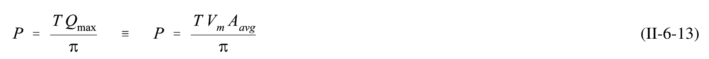 |
| 14 | II-6-14 | single_verified | $$P = \frac{TQ_{\text{max}}}{\pi C} \equiv P = \frac{TV_m A_{avg}}{\pi C}$$ | 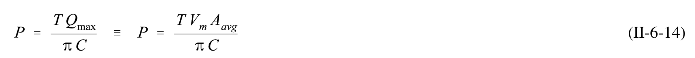 |
| 15 | II-6-15 | agreed | $$\frac{V_{avg}}{V_{meas}} = \left(\frac{R}{D}\right)^{\frac{2}{3}}$$ | 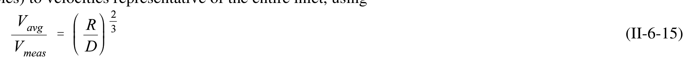 |
| 16 | II-6-16 | agreed | $$f = \frac{116n^2}{R^{1/3}}$$ | 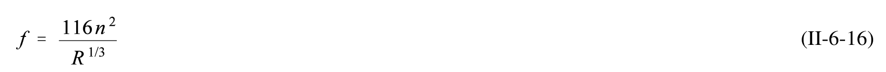 |
| 17 | II-6-17 | agreed | $$F = k_{en} + k_{ex} + \frac{fL}{4R}$$ | 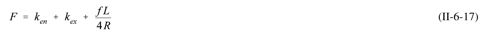 |
| 18 | II-6-18 | agreed | $$R = \frac{A_{avg}}{Average \ Wetted \ Perimeter} \approx \frac{A_{avg}}{Average \ Width}$$ | 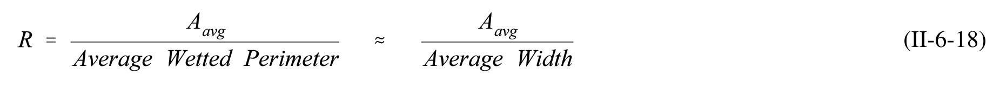 |
| 19 | II-6-19 | agreed | $$A_c = Bd = 180 (3.7) = 666 \text{ m}^2 (7166 \text{ ft}^2)$$ | 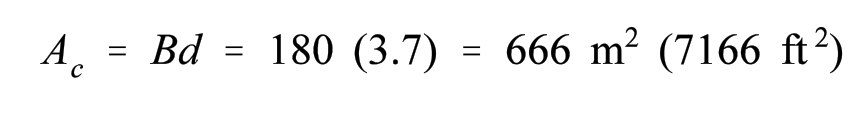 |
| 20 | II-6-20 | agreed | $$R \, = \, \frac { A _ { c } } { ( B \, + \, 2 d ) } \, = \, \frac { 6 6 6 . } { ( 1 8 0 \, + \, 2 ( 3 . 7 ) ) } \, = \, 3 . 5 5 \, \mathrm { m } \, ( 1 1 . 5 4 \, \mathrm { f t } )$$ | 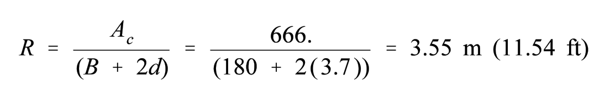 |
| 21 | II-6-21 | agreed | $$F = k_{en} + k_{ex} + \frac{fL}{4R} = 1.0 + 0.1 + \frac{0.03 (1100)}{4 (3.55)} = 3.42$$ | 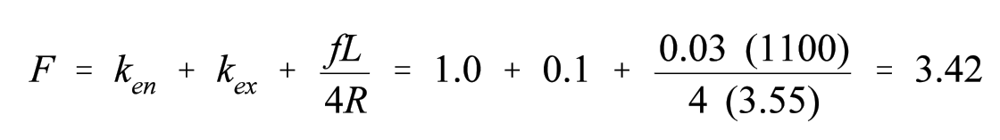 |
| 22 | II-6-22 | agreed | $$K_1 = \frac{a_o A_b F}{2 L A_c} = \frac{(1.30/2 (1.9) (10^7) 3.42}{2 (1100) (666)} = 28.8$$ | 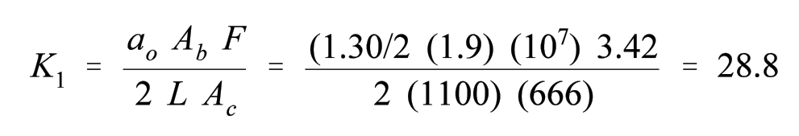 |
| 23 | II-6-23 | agreed | $$K _ { 2 } \ = \ { \frac { 2 \pi } { T } } \ \sqrt { \frac { L \ A _ { b } } { g \ A _ { c } } } \ = \ { \frac { 2 \pi } { 1 2 . 4 \ ( 6 0 \ ( 6 0 ) } } \ \sqrt { \frac { 1 1 0 0 \ ( 1 . 9 ) \ 1 0 ^ { 7 } } { 9 . 8 \ ( 6 6 6 ) } } \ = \ 0 . 2 5$$ | 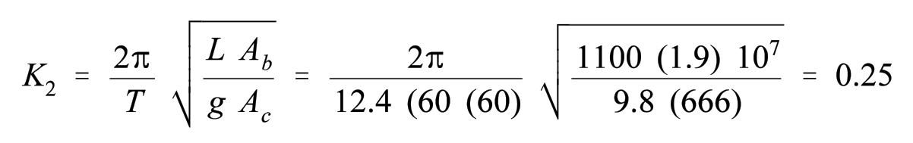 |
| 24 | II-6-24 | agreed | $$\frac { a _ { b } } { a _ { s } } \, = \, 0 . 7 8$$ | 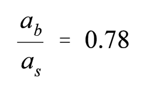 |
| 25 | II-6-25 | agreed | $$V_m' = 0.66$$ | 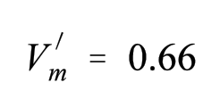 |
| 26 | II-6-26 | agreed | $$\epsilon \: = \: 5 3 ^ { o }$$ | 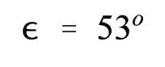 |
| 27 | II-6-27 | agreed | $$V_m = \frac{V_m' 2\pi \ a_s \ A_b}{A_c \ T}$$ | 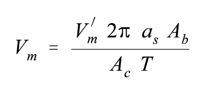 |
| 28 | II-6-28 | agreed | $$V_m = \frac{0.66 (2) (3.14) (0.65) (1.9) 10^7}{666 (12.42) (3,600)} = 1.72 \text{ m/s} (5.64 \text{ ft/s})$$ | 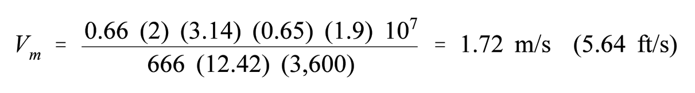 |
| 29 | II-6-29 | agreed | $$Q_m = V_m A_c = (1.72) (666) = 1145 \text{ m}^3/\text{s} (40,430 \text{ ft}^3/\text{s})$$ | 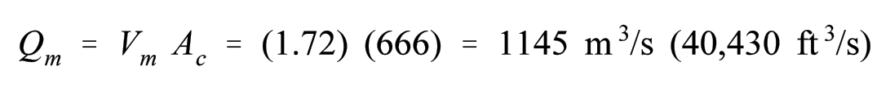 |
| 30 | II-6-30 | agreed | $$2 a_b A_b = 2 (0.51) (1.90) (10^7) = 1.94 \times (10^7) \text{ m}^3 \qquad (6.27 \times 10^8 \text{ ft}^3)$$ | 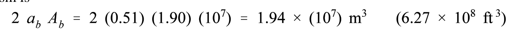 |
| 31 | II-6-31 | single_verified | $$t _ { * } \, = \, { \frac { L _ { b } } { \sqrt { g d _ { b } } } } \, = \, { \frac { 6 0 0 0 } { \sqrt { 9 . 8 \, ( 6 . 0 ) } } } \, = \, 7 8 2 \, \mathrm { s e c \, o r \, } 0 . 2 2 \, \mathrm { h r }$$ | 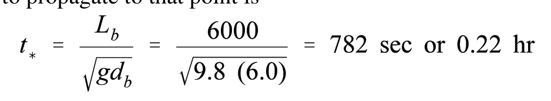 |
| 32 | II-6-19 | agreed | $$Q _ { r } ^ { \prime } = \frac { Q _ { r } T } { 2 \pi a _ { o } A _ { b } }$$ | 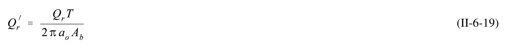 |
| 33 | II-6-20 | agreed | $$\frac{\Delta}{a_o} = \frac{\sin\left(\frac{2\pi t_i}{T}\right)}{1 - \cos\left(\frac{2\pi t_i}{T}\right)}$$ | 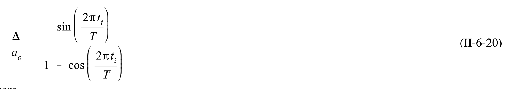 |
| 34 | II-6-21 | agreed | $$\frac{\Delta}{a_o} = 1 - \frac{\left(\frac{a_b}{a_o}\right)^2}{4\left(\frac{d}{a_o}\right)} - \frac{a_o}{mW} \left[\frac{1}{2} - \left(\frac{a_b}{a_o}\right)\cos\epsilon - \frac{3}{2}\left(\frac{a_b}{a_o}\right)^2 + 4\left(\frac{d}{a_o}\right)^2\right]$$ | 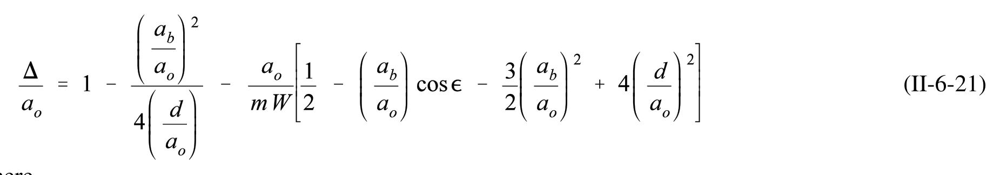 |
| 35 | II-6-35 | agreed | $$Q_r' = \frac{Q_r T}{2\pi a_o A_b}$$ | 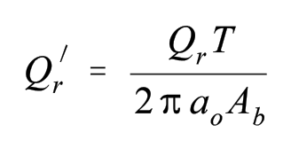 |
| 36 | II-6-36 | agreed | $$Q _ { r } ^ { \prime } \ = \ \frac { 3 5 0 \ ( 4 4 7 1 2 ) } { 2 ( 3 . 1 4 ) \ ( 1 . 3 0 / 2 ) \ ( 1 . 9 0 \ x \ 1 0 ^ { 7 } ) } \ = \ 0 . 2 0$$ | 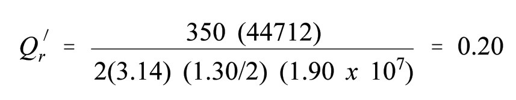 |
| 37 | II-6-37 | agreed | $$K = \frac{1}{k_2} \sqrt{\frac{1}{K_1}}$$ | 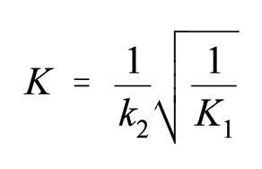 |
| 38 | II-6-38 | agreed | $$K = { \frac { 1 } { 0 . 2 5 } } \, { \sqrt { \frac { 1 } { 2 8 . 8 } } } \, = \, 0 . 7 5$$ | 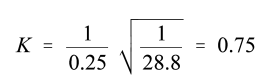 |
| 39 | II-6-39 | single_verified | $$\frac{a_{b \text{ max}}}{a} = 0.92$$ | 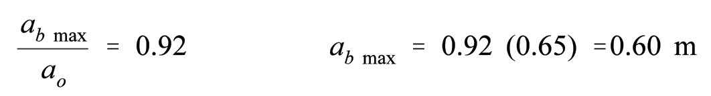 |
| 40 | II-6-40 | single_verified | $$\frac{a_{b \text{ min}}}{a} = -0.56$$ | 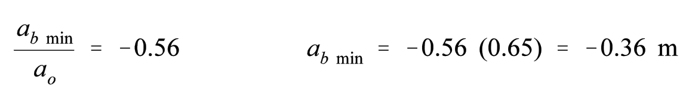 |
| 41 | II-6-41 | agreed | $$U_{maxe}' = 0.80$$ | 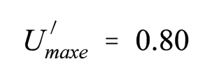 |
| 42 | II-6-42 | agreed | $$U_{maxe} = \frac{U'_{maxe} 2\pi \ a_o A_b}{A_{avg} T} = \frac{0.80 \ (2) \ (3.14) \ (0.65) \ (1.90) \ 10^7}{666 \ (12.42) \ (3600)} = 2.08 \ \text{m/s}$$ | 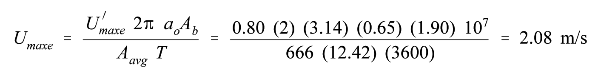 |
| 43 | II-6-43 | agreed | $$U_{maxf}' = 0.50$$ | 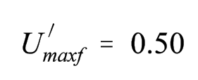 |
| 44 | II-6-44 | agreed | $$U_{maxf} = \frac{U'_{maxf} 2\pi a_o A_b}{A_{avg} T} = \frac{0.50 (2) (3.14) (0.65) (1.90) 10^7}{666 (12.42) (3600)} = 1.30 \text{ m/s}$$ | 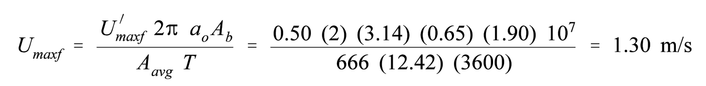 |
| 45 | II-6-45 | agreed | $$Q_{maxe} = U_{maxf} A_c = 2.08 (666) = 1385 \text{ m}^3/\text{s}$$ | 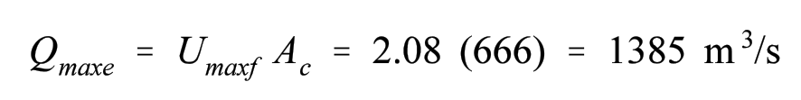 |
| 46 | II-6-46 | agreed | $$Q_{maxf} = U_{maxf} A_c = 1.30 (666) = 866 \text{ m}^3/\text{s}$$ | 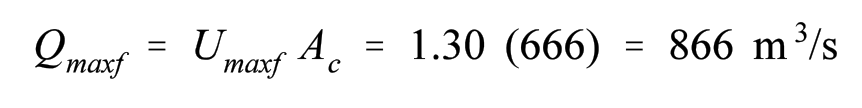 |
| 47 | II-6-22 | agreed | $$\frac{dh_b}{dt} \propto \frac{A_{avg}}{A_b}$$ | 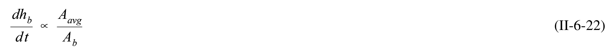 |
| 48 | II-6-23 | agreed | $$K_{\text{inlet 1}} + K_{\text{inlet 2}} + \dots K_{\text{inlet n}} = K_{\text{all inlets}}$$ | 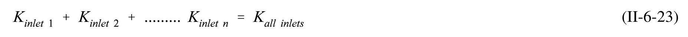 |
| 49 | II-6-24 | single_verified | $$Q_{\text{max}} = \frac{2\pi}{T} a_o A_b V_{\text{max}}$$ | 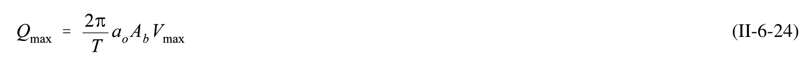 |
| 50 | II-6-25 | single_verified | $$Q_{\text{max}} = Q_{1\text{max}} + Q_{2\text{max}} + Q_{3\text{max}} + \dots$$ | 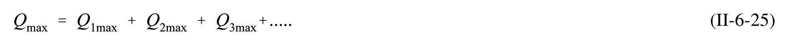 |
| 51 | II-6-26 | single_verified | $$Q_{1\text{max}} = \frac{Q_{\text{max}}}{1 + \frac{K_2}{K_1} + \frac{K_3}{K_1}}$$ | |
| 52 | II-6-27 | agreed | $$10 > \frac{\langle V \rangle}{\epsilon P} > 1.5$$ | |
| 53 | II-6-28 | agreed | $$\frac { \tau _ { r } } { T } = \frac { \left. V \right. } { \epsilon P }$$ | |
| 54 | II-6-29 | agreed | $$H = (R_H)H_A$$ | |
| 55 | II-6-55 | agreed | $$\mu = \frac{gb_o n^2}{h_o^{0.75}} = \frac{(9.8) (100) (0.02)^2}{(8)^{0.75}} = 0.08$$ | |
| 56 | II-6-56 | agreed | $$\xi = \frac{x}{b_o}$$ | |
| 57 | II-6-57 | agreed | $$\frac { b } { b _ { o } } \big ( \xi \big ) = 1 8 . 5 \Rightarrow b = 1 0 0 ( 1 8 . 5 ) = 1 8 5 0 \mathrm { \, m \, }$$ | |
| 58 | II-6-58 | single_verified | $$\frac{u_c}{u_o}$$ | |
| 59 | II-6-59 | agreed | $$\Omega = (2\pi/T) (d_T/g)^{1/2}$$ | |
| 60 | II-6-60 | agreed | $$F = (V \cos \theta)/(g\bar{\mathbf{d}}_{\mathrm{T}})^{1/2}$$ | |
| 61 | II-6-61 | agreed | $$\Omega = \left(\frac{2 (3.14)}{5.0}\right) \left(\frac{5}{9.8}\right)^{1/2} = 0.90$$ | |
| 62 | II-6-62 | agreed | $$F = \frac{1.0 (\cos 180)}{(9.8 \cdot (5))^{1/2}} = -0.14$$ | |
| 63 | II-6-63 | single_verified | $$H = (R_H) H_A = 1.35 (1.0) = 1.35 \text{ m}$$ | |
| 64 | II-6-30 | agreed | $$F = \frac{V \cos \theta}{\left(g d_T\right)^{\frac{1}{2}}}$$ | |
| 65 | II-6-31 | agreed | $$\Omega = \left(\frac{2\pi}{T}\right) \left(\frac{d_T}{g}\right)^{\frac{1}{2}}$$ | |
| 66 | II-6-32 | single_verified | $$A_c = 9.902 \times 10^{-3} p^{0.61}$$ | |
| 67 | II-6-33 | single_verified | $$\beta = \int_{a_C}^{a_E} (V_{\text{max}} - V_T)^3 dA_c$$ | |
| 68 | II-6-34 | agreed | $$Q_i = Q_g \left( \frac{H_i^2}{\sum_{i=1}^n H_i^2} \right)$$ | |
| 69 | II-6-35 | single_verified | $$\left(\frac{d_1}{d_2}\right)^{\frac{5}{2}}$$ | |
| 70 | II-6-36 | agreed | $$\text{Daily shoal volume} = C Q_{g} \left( \frac{H_{i}^{2}}{\sum_{i=1}^{n} H_{i}^{2}} \right) \left[ 1 - \left( \frac{d_{1}}{d_{2}} \right)^{\frac{5}{2}} \right] [L^3]$$ | |
| 71 | II-6-37 | agreed | $$F_{I} = \frac{(E_{\Delta T} \cdot E_{W} \cdot D_{R})}{10^{14}} \quad \left[\frac{ML^{2}}{T^{2}}\right]$$ | |
| 72 | II-6-38 | single_verified | $$E_{\Delta T} = \frac{4T}{3\pi} q_{\text{max}}^3 \frac{d_2^2 - d_1^2}{d_1^2 d_2^2}$$ | |
| 73 | II-6-39 | agreed | $$E_W = K \times 10^6 \ (H_0)^2 \ T \quad \left[\frac{ML^2}{T^2}\right]$$ | |
| 74 | II-6-40 | agreed | $$D _ { R } \ = \ { \frac { d _ { 2 } \ - \ d _ { 1 } } { d _ { 3 } \ - \ d _ { 1 } } }$$ | |
| 75 | II-6-41 | agreed | $$V_R = a F_I^b e^{cF} I$$ |